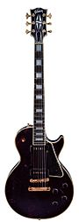

An electric guitar is a fretted string instrument that uses a pickup to
convert the vibration of its strings—which are typically made of steel, and
which occurs when a guitarist strums, plucks or fingerpicks the strings—into
electrical signals.
The vibrations of the strings are sensed by a pickup, of
which the most common type is the magnetic pickup, which uses the principle of
direct electromagnetic induction. The signal generated by an electric guitar is
too weak to drive a loudspeaker, so it is plugged into a guitar amplifier before
being sent to a loudspeaker, which makes a sound loud enough to hear.
The output
of an electric guitar is an electric signal, and the signal can easily be
altered by electronic circuits to add "color" to the sound or change the sound.
Often the signal is modified using effects such as reverb and distortion and
"overdrive", with the latter being a key element of the sound of the electric
guitar as it is used in blues and rock music.
Invented in 1931, the amplified electric guitar was adopted by jazz guitarists,
who sought to be able to be heard in large big band ensembles. Early proponents
of the electric guitar on record included Les Paul, Lonnie Johnson, Sister
Rosetta Tharpe, T-Bone Walker, and Charlie Christian.
During the 1950s and
1960s, the electric guitar became the most important instrument in pop music. It
has evolved into an instrument that is capable of a multitude of sounds and
styles.
It served as a major component in the development of electric blues,
rock and roll, rock music, heavy metal music and many other genres of music.
Electric guitar design and construction vary greatly in the shape of the body
and the configuration of the neck, bridge, and pickups. Guitars have a fixed
bridge or a spring-loaded hinged bridge that lets players bend notes or chords
up or down in pitch or perform vibrato effects.
The sound of a guitar can be
modified by new playing techniques such as string bending, tapping, hammering
on, using audio feedback, or slide guitar playing.
There are several types of
electric guitar, including the solid-body guitar, various types of hollow-body
guitars, the six-string guitar (the most common type, often tuned E, A, D, G, B,
E, from lowest to highest strings), the seven-string guitar, which typically
adds a low B string below the low E, and the twelve-string electric guitar,
which has six pairs of strings.

Popular music and rock groups often use the electric guitar in two roles: as a
rhythm guitar, which provides the chord sequence or progression and sets the
beat (as part of a rhythm section), and as a lead guitar, which is used to
perform melody lines, melodic instrumental fill passages, and solos. In a small
group, such as a power trio, one guitarist switches between both roles.
In
larger rock and metal bands, there is often a rhythm guitarist and a lead
guitarist.
Many experiments at electrically amplifying the vibrations of a string
instrument date back to the early part of the 20th century. Patents from the
1910s show telephone transmitters adapted and placed inside violins and banjos
to amplify the sound.
Hobbyists in the 1920s used carbon button microphones
attached to the bridge; however, these detected vibration from the bridge on top
of the instrument, resulting in a weak signal.[2] With numerous people
experimenting with electrical instruments in the 1920s and early 1930s, there
are many claimants to have been the first to invent an electric guitar.
Electric guitars were originally designed by guitar makers and instrument
manufacturers. Some of the earliest electric guitars adapted hollow-bodied
acoustic instruments and used tungsten pickups.
The first electrically amplified
guitar was designed in 1931 by George Beauchamp, the general manager of the
National Guitar Corporation, with Paul Barth, who was vice president.
The maple
body prototype for the one-piece cast aluminum "frying pan" was built by Harry
Watson, factory superintendent of the National Guitar Corporation. Commercial
production began in late summer of 1932 by the Ro-Pat-In Corporation
(Electro-Patent-Instrument Company), in Los Angeles, a partnership of Beauchamp,
Adolph Rickenbacker (originally Rickenbacher), and Paul Barth.
In 1934, the
company was renamed the Rickenbacker Electro Stringed Instrument Company. In
that year Beauchamp applied for a United States patent for an Electrical
Stringed Musical Instrument and the patent was issued in 1937.
By early-mid 1935, Electro String Instrument Corporation had achieved mainstream
success with the A-22 Frying Pan, and set out to capture a new audience through
its release of the "Model B - Electro-Spanish" and the "Electro-Spanish Ken
Roberts" which was the first full 25" scale electric guitar produced.
The
Electro-Spanish Ken Roberts provided players a full 25" scale, with 17 frets
free of the fretboard. It is estimated that fewer than 50 Electro-Spanish Ken
Roberts were constructed between 1933 and 1937; fewer than 10 are known to
survive today.
The need for the amplified guitar became apparent during the big band era as
orchestras increased in size, particularly when guitars had to compete with
large brass sections. The first electric guitars used in jazz were hollow
archtop acoustic guitar bodies with electromagnetic transducers.
Early electric
guitar manufacturers include Rickenbacker in 1932; Dobro in 1933; National,
AudioVox and Volu-tone in 1934; Vega, Epiphone (Electrophone and Electar), and
Gibson in 1935 and many others by 1936.
The solid-body electric guitar is made of solid wood, without functionally
resonating air spaces. The first solid-body Spanish standard guitar was offered
by Vivi-Tone no later than 1934.
This model featured a guitar-shaped body of a
single sheet of plywood affixed to a wood frame. Another early, substantially
solid Spanish electric guitar, called the Electro Spanish, was marketed by the
Rickenbacker guitar company in 1935 and made of Bakelite. By 1936, the
Slingerland company introduced a wooden solid-body electric model, the
Slingerland Songster 401 .
The earliest documented performance with an electrically amplified guitar was in
1932, by Gage Brewer, a musician based in Wichita, Kansas.
He had an Electric
Hawaiian A-25 (frypan, lap steel) and a standard Electric Spanish from George
Beauchamp of Los Angeles. Brewer publicized his new instruments in an article in
the Wichita Beacon of 2 October 1932 and through performances that month.
The first recordings using the electric guitar were by Hawaiian-style players,
in 1933. Bob Dunn of Milton Brown's Musical Brownies introduced the electric
Hawaiian guitar to Western swing with his January 1935 Decca recordings,
departing almost entirely from the Hawaiian musical influence and heading
towards jazz and blues. Alvino Rey was an artist who took this instrument to a
wide audience in a large orchestral setting and later developed the pedal steel
guitar for Gibson.
An early proponent of the electric Spanish guitar was jazz
guitarist George Barnes, who used the instrument in two songs recorded in
Chicago on 1 March 1938, "Sweetheart Land" and "It's a Low-Down Dirty Shame".
Some incorrectly attribute the first recording to Eddie Durham, but his
recording with the Kansas City Five was made 15 days later.Durham introduced the
instrument to a young Charlie Christian, who made the instrument famous in his
brief life and would be a major influence on jazz guitarists for decades
thereafter.
Gibson's first production electric guitar, marketed in 1936, was the ES-150
model ("ES" for "Electric Spanish", and "150" reflecting the $150 price of the
instrument, along with matching amplifier). The ES-150 guitar featured a
single-coil, hexagonally shaped "bar" pickup, which was designed by Walt Fuller.
It became known as the "Charlie Christian" pickup (named for the great jazz
guitarist who was among the first to perform with the ES-150 guitar). The ES-150
achieved some popularity but suffered from unequal loudness across the six
strings.
Early proponents of the electric guitar on record include Alvino Rey (Phil
Spitalney Orchestra), Les Paul (Fred Waring Orchestra), Danny Stewart
(musician)|Danny Stewart (Andy Iona Orchestra), George Barnes (under many
aliases), Lonnie Johnson, Floyd Smith, Big Bill Broonzy, T-Bone Walker, George
Van Eps, Charlie Christian (Benny Goodman Orchestra), Tampa Red, Memphis Minnie,
and Arthur Crudup.
A functionally solid-body electric guitar was designed and built in 1940 by Les
Paul from an Epiphone acoustic archtop. His "log guitar" (so called because it
consisted of a simple 4x4 wood post with a neck attached to it and homemade
pickups and hardware, with two detachable Epiphone hollow-body halves attached
to the sides for appearance only) shares nothing in design or hardware with the
solid-body Gibson Les Paul introduced in 1952.
However, the feedback associated
with hollow-bodied electric guitars was understood long before Paul's "log" was
created in 1940; Gage Brewer's Ro-Pat-In of 1932 had a top so heavily reinforced
that it essentially functioned as a solid-body instrument.
In 1945, Richard D. Bourgerie made an electric guitar pickup and amplifier for
professional guitar player George Barnes.
Bourgerie worked through World War II
at Howard Radio Company, making electronic equipment for the American military.
Barnes showed the result to Les Paul, who then arranged for Bourgerie to have
one made for him.